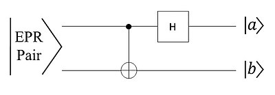
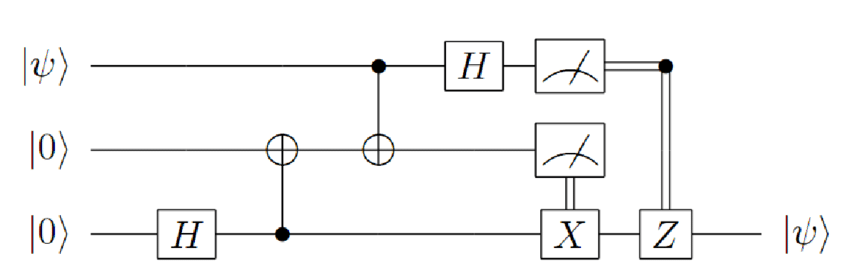

Please enter two different random values and to generate primes (numbers less than 5 digits work best). These primes will be used to generate a public key. In addition, please enter a numerical message to be encrypted (again, please keep this under 5 digits).
Quantum teleportation can be expressed as a method of information sharing not too different from methods such as Diffie Hellman key exchange. The term “teleportation” makes it seem like a qubit is physically teleporting, but it's really just transferring a qubit's state from one location to another. As an example, our two locations will be Alice’s Lab and Bob’s Lab. Let’s assume that Alice and Bob both have one part of an entangled pair of qubits, meaning that any measurement of Alice’s component will definitely affect Bob’s component even if there’s distance between them, i.e. one is at Alice’s lab and one is at Bob’s lab. Alice also has an unentangled qubit, psi, which is the qubit she is teleporting to Bob. In order to entangle Alice’s qubit, psi, with her already entangled component, she can perform a Bell-state measurement which will project psi and the entangled qubit into a superposition of the four Bell states. This measurement is accomplished by a CNOT gate and a Hadamard gate as seen in the figure below.

As seen above, after the CNOT and Hadamard gates, psi is measured and collapses into a classical form, which also collapses Bob’s component since it was part of the original pair. Alice can now send her measurements of her two qubits to Bob. Four protocols exist for Bob based on the results he gets from Alice, each corresponding to one of the possible Bell states. When Bob applies the corresponding protocol, his qubit’s state will be identical to Alice’s original qubit psi. This method of information transferring is critical in quantum mechanics due to the fact that there is “no cloning theorem” which states that an identical copy of an unknown quantum state cannot be created. Thus, to exchange quantum information, one must entangle the qubit with a component of an entangled pair shared between communicators. Here’s an interesting and thorough YouTube video that covers these ideas and gives a visual and mathematical representation of the entire circuit.
Continuing down the quantum mechanics rabbit hole, and once again talking about the work of John Stewart Bell, we can discuss the Bell Test. First, it’s important to understand the historical debate the test aims to answer. In the early days of quantum physics, Heisenberg’s uncertainty principle was disputed by Albert Einstein, Boris Podolsky, and Nathan Rosen. Ultimately, they claimed that quantum mechanics predicted more information than the Heisenberg principle allowed according to relativity, which would only be possible if information was being transmitted truly instantaneously, which is faster than the speed of light and therefore the EPR paradox was born, named after the trio. They undermined Heisenberg’s uncertainty as a lack of variables, or that hidden variables existed that, if obtained, could be used to determine a particle's position and momentum. Expanding on this, they coined the principle of locality, which limits the speed of transmission to the speed of light, undermining the idea of quantum entanglement. John Bell created an experiment that could produce entangled pairs and measure some quality. In the test, two measurers, Alice and Bob, will be receiving one photon from an entangled pair and measuring its polarity. Alice and Bob each have their own unique set of polarized lenses that they use to modify the state of the photon. According to local hidden variables, the measurements should be independent of each other, with only a certain degree of correlation due to coincidence. However, in every Bell test the results have shown a correlation that exceeds random coincidence. Therefore, some action must be occurring instantaneously at a distance, supporting quantum theory and disproving EPR.